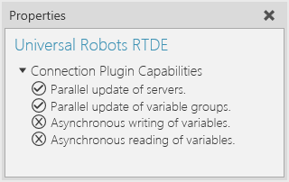
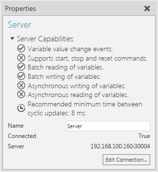
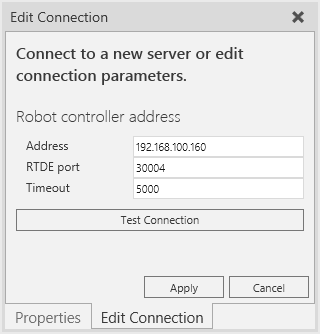
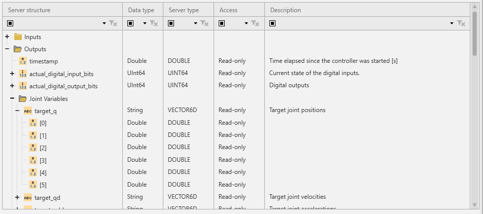
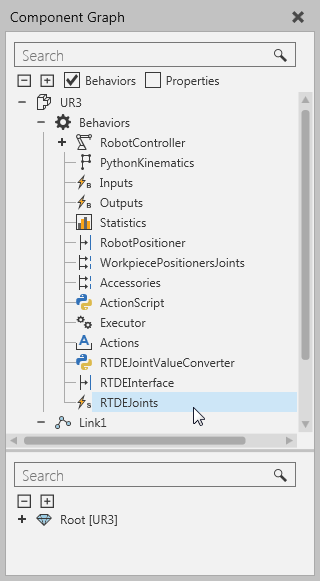
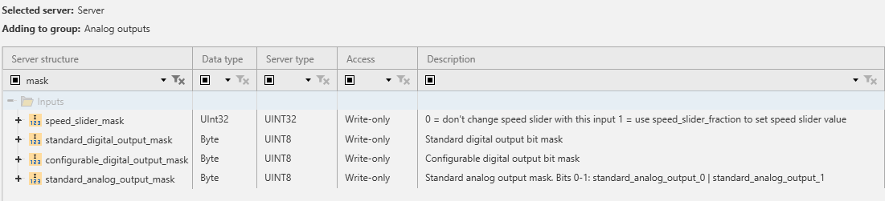

The Universal Robots RTDE plugin allows you to connect Universal Robot CB3 series robot controllers with an RTDE interface. You can also connect a URSim robot controller simulator with an RTDE interface. For example, you can can establish a connection with PolyScope, Universal Robots virtual robot controller.
Note: Added in R-Pro 2.1 4.0.4.
Contents ShowHide
You can verify the capabilities of the Universal Robots RTDE plugin and subsequent server connections in the Properties panel.


Note: The capabilities are the same for each server connection with the Universal Robots RTDE plugin.
The Real time data exchange (RTDE) interface provides a cyclic stream of value updates from the controller and listens for inputs. The interface updates (sends and handles data packages) at a fixed frequency and is based on a binary application level protocol transmitted over (insecure) TCP/IP socket communication. The robot controller uses TCP port 30004 for the interface. The connection plugin's RTDE client implementation uses an automatically assigned port (either by .NET or possibly Windows) for the socket.
Note: The RTDE interface is available and always enabled in Universal Robots CB3-series robot controllers running software version 3.2.19171 or newer.
The basic operation principle involves two modes, configuration and run. First, the client configures with the server the data it wants to receive and data it wants to send. This is done in configuration mode. After configuration has been set, the client can request the controller to enter run mode where the controller sends the requested data at the fixed 125 Hz frequency and the client can send its data at a preferred rate. Run mode can also be paused by request of the client to return to configuration mode.
The data packages the client and controller send to one another are defined with input and output recipes in configuration mode.
The recipes contain one or more variables from a known fixed set, and the associated data packages contain values for all variables in the recipe.
The current version of the RTDE protocol supports only a single output recipe per client, but up to 255 input recipes can be defined per client. Furthermore, it is not possible to remove an input recipe without disconnecting and creating an entirely new one. This means that adding/removing a variable pair or activating/deactivating a variable group always causes a recipe update. Since the recipe update can only be done in configuration mode, the RTDE client implementation automatically requests pausing from the controller, and then either a) redefines the output recipe shared between all variable groups or b) registers a new input recipe for the activated variable group.
The RTDE protocol does not provide any way to poll the controller for value updates. This causes some limitations that differentiate the RTDE connection plugin from others. The RTDE connection plugin manages a local cache of the variable values for all configured recipes (active variable groups). This allows using cyclic update mode to read output recipe values at any desired frequency, and sending whole input recipe data to the controller in event-based update mode. However, since the output recipe updates are received and input recipe data is sent asynchronously, the update delay timing functionality of Connectivity core does not really work with the RTDE plugin. The times measured are only processing times to get data in or out of the cache. That is, they do not include the network delay or even how old the received output recipe data is when the cache is read using cyclic update mode.
Note: Since the controller handles the RTDE input recipe packages at a fixed rate (125 Hz nominal), it will miss values if sent faster than that from the simulation. The controller uses only the last received value for each variable if multiple values are received during the controller’s update cycle. The controller input variable values are retained so they do not need to be sent at a fixed rate. Mask variables are an exception: they do not retain their values between update cycles.
A Universal Robots RTDE plugin connection requires the IP address and RTDE port of the robot controller and a timeout (in milliseconds). The port should always be 30004 for future proofing. The timeout value is used for initial connect and sync operations, including all configuration changes to recipes.
To define a new server connection:

The RTDE interface specifies a fixed set of variables that each can be either read or written. The input variables of the controller cannot be read by the client and output variables of the controller cannot be written. However, there are some separate variables that make reading and writing the same thing, for example digital outputs of the controller.
The RTDE address space does not have hierarchy, and variables can only be read/write as a whole as part of recipe data packages. However, since the Connectivity core only handles basic data types, the RTDE connection plugin provides access to components of vector variables and single bits of integer variables. The single bit access is needed because the controller's digital inputs and outputs are only available as integers, not single Booleans. The connection plugin also provides read access (writing not supported) to vector output variables from the controller as strings. The vector's elements are converted to decimal strings, using full precision for floating point values and a period "." as decimal delimiter. The element strings are then joined with a single space character as delimiter.
The RTDE connection plugin uses a hardcoded information model of the server address space, which provides browsing capability. This hardcoded model corresponds to the UR controller version 3.3. The RTDE protocol does not include functionality for retrieving information about available variables on the controller. If new controller software versions add variables to the interface, those will not be accessible without updating the connection plugin.
The browsing functionality presents the variables in a more convenient hierarchical folder structure, and creates child variable nodes for vector components and bits in integers. Vectors can also contain integer variables, which can be accessed bit by bit.
Example. Vector variable browsing

Important: The robot RTDE interface variables use radians as the unit for angles in variables, for example current and target joint values. This means they cannot be directly paired to Value properties of DOF objects in the UR robot components. To workaround this issue, UR robot components available in the eCatalog panel have been modeled with a "RTDEJoints" string signal behavior, which can be mapped to the "target_q" output variable in the controller. A script in the robot is used to receive events from that signal, parse its value, and use immediate movements to jump the robot component to the received pose.

Four inputs to controller have separate mask variables. These masks act as a filter for applying the values sent by the client. The idea is that the RTDE client does not necessarily want to overwrite all bits in, for example, the variable that controls the "standard digital outputs" of the robot. This allows control over some bits of a variable from the robot program on the controller and some from RTDE clients. These masks create some limitations for using the input variables in R-Pro 2.1.
Important: The RTDE interface does not allow more than one client to access the same controller input variable.

Example. Conditions for modifying standard digital output state on robot controller
The effects of those conditions for the Connectivity feature are:
The Universal Robots RTDE plugin supports access to all available variables. All signed and unsigned integer variables can be both paired directly or the individual bits paired as Booleans. Vectors can be read as strings, but cannot be written as a whole.
| RTDE Type | .NET Type | Remarks |
| DOUBLE | System.Double | None |
| INT32 | System.Int32 | None |
| UINT16 | System.UInt16 | None |
| UINT32 | System.UInt32 | Integers in R-Pro 2.1 are signed 32-bit. |
| UINT64 | System.UInt64 | Integers in R-Pro 2.1 are signed 32-bit. |
| UINT8 | System.Byte | None |
| VECTOR3D | System.String | Converted to a single string by the RTDE plugin when read from the controller. Components Elements (3 x DOUBLE) can be read and written separately. |
| VECTOR6D | System.String | Converted to a single string by the RTDE plugin when read from the controller. Components Elements (6 x INT32) can be read and written separately. |
| VECTOR6INT32 | System.String | Converted to a single string by the RTDE plugin when read from the controller. Components Elements (6 x INT32) can be read and written separately. |
| VECTOR6UINT32 | System.String | Converted to a single string by the RTDE plugin when read from the controller. Components Elements (6 x UINT32) can be read and written separately. |
The communication delay is mostly defined by the fixed update rate of the UR controller.
Note: The timing functionality of the Connectivity core is not accurate with this plugin.
Using event-based update mode is recommended for variable groups with data flow from server to simulation unless the update rate is too high for the simulation to handle.
For simulation to server data flow, cyclic update mode is recommended, but setting update rate higher than 125 Hz does not provide any benefit. The controller uses only the last received value for each variable if multiple values are received during the controller's update cycle.
Note: Event-based update mode from simulation to server may send lots of updates that get lost due to the update rate of controller. Mask variables may not work as expected due to the mask and the masked value arriving in different input recipe value update packets.